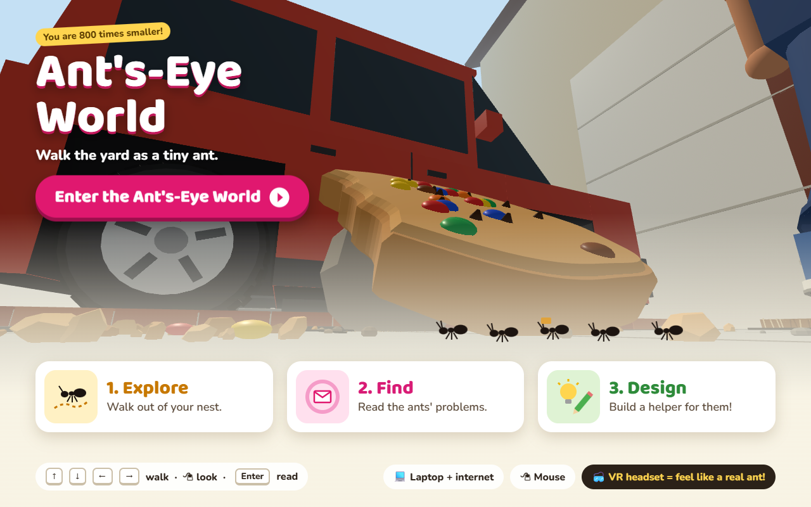

We decided who the world is for, what it should teach, and which tools to use.

| Audience | Grade 3 to 5 · laptop + mouse · VR headset optional |
| Goal | Feel life as a tiny ant · read 3 real ant problems · design a helper |
| 3 places | A cookie too big · giant feet at the doormat · a web in the way |
| Our tools | Claude Code + a team of AI helpers · A-Frame (3D) · HTML/CSS/JS, no game engine |
| Problem cards | 3 cards · the problem, why it is hard, a design question |
| Writing rules | Short sentences · grade 3-5 words · hard words explained |
| Start page | 1. Explore 2. Find 3. Design |
| The yard | No 3D model files · grass, fence, house, car, cookie, person made from shapes in code |
| Ant size | You are 800 times smaller · grass is taller than you |
| Fonts | Baloo 2 + Nunito (Google Fonts) |
| Start picture | Taken inside the world itself |
| Ant's-eye view | The camera sits just above the ground · start at the ant nest |
| Walking | Arrow keys or WASD · you can't walk through solid things |
| Messages | Pink ring + envelope · "Read the message" button or Enter |
| Mini map | Pink dots turn into green checks |
| Vercel | Turns our files into a website |
| Live address | (아직 없음 · 올린 뒤 채움) |
| VR headsets | Need a secure (https) link |